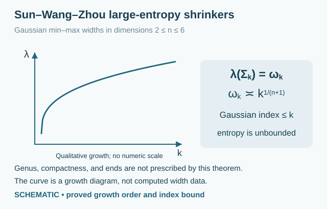

2.20 Sun–Wang–Zhou shrinkers of arbitrarily large entropy879F42A66D65
879F42A66D65
The Gaussian-width construction of [CatSunWangZhou2024] produces shrinkers whose entropy is unbounded, in contrast with the uniform upper bounds for several gluing and low-parameter min-max families.
Example 2.20.1(Sun–Wang–Zhou Gaussian-width shrinkers).0177A2718D72 For every $2\leq n\leq 6$ there is a sequence of smooth, connected, embedded self-shrinking hypersurfaces $\Sigma _ k^ n\subset \mathbb R^{n+1}$. They are normalized by $\vec H=-X^\perp /2$, with associated smooth flows $M_ t=\sqrt{-t}\, \Sigma _ k$ for $t<0$. The construction is variational and does not give explicit parametrizations.
Each shrinker is complete, proper, boundaryless, and has finite entropy. The construction is a multiplicity-one limit of free-boundary min-max hypersurfaces in exhausting balls with metrics approaching the Gaussian metric. The final shrinker has no free boundary.
Write $G_ n=(4\pi )^{-1}e^{-|x|^2/(2n)}g_{\mathrm{Euc}}$ and let $\omega _ k(\mathbb R^{n+1},G_ n)$ be its Gaussian $k$-width, defined by exhaustion. Then
The growth statement means comparison up to positive constants depending on $n$, and in particular $\lambda (\Sigma _ k)\to \infty $. It is not a closed formula for an individual width or a plotted list of computed values. The unbounded entropies ensure infinitely many different examples, without requiring consecutive widths to be strictly different.
The Gaussian Morse index for compactly supported normal variations satisfies $\mathrm{index}(\Sigma _ k)\leq k$. This is an upper bound, not an equality or an entropy-stability claim.
The theorem does not specify a genus, a number of ends, end asymptotics, compactness, or a symmetry group for each member. In dimension two the genus is therefore left unrecorded in the property browser, rather than inferred from the min-max parameter.
In every dimension $n\geq 2$ and for every $\Lambda >0$, there is a smooth embedded shrinker with $\Lambda <\lambda (\Sigma )<\infty $ and finite Gaussian index. For $n\geq 7$ this follows by taking a lower-dimensional example and a Euclidean product. For example, $\Sigma ^6\times \mathbb R^{n-6}\subset \mathbb R^{n+1}$ has the same entropy as $\Sigma ^6$, and Theorem 5.3 preserves finiteness of index under each line product. These higher-dimensional product examples are noncompact; this extension does not assert the $n$-dimensional Gaussian-width growth law above beyond $n=6$.
Sources: [CatSunWangZhou2024], Theorem 1.6 and Corollary 1.7, arXiv version 1, PDF p. 4; Definition 5.1 and the proof of Theorem 1.6, pp. 39–42; Definition 5.2, p. 40; Theorem 5.3 and its proof, pp. 42–44. The illustration is a diagram of the width-growth conclusion, not numerical entropy data or a surface model.

Original schematic. A qualitative increasing curve illustrates the growth of Gaussian widths with the min-max parameter k. For dimensions two through six the constructed shrinker has entropy equal to the kth width, with growth comparable to k to the power one over n plus one and Gaussian Morse index at most k. No numerical entropy values or shapes are plotted. Open drawingAmbient space, topology and entropy
Gaussian-width sequence for dimensions 2–6; a separate Euclidean-product argument extends unbounded entropy with finite index to all dimensions ≥ 2. The theorem does not prescribe genus, ends, or compactness of the base examples.
Gaussian-width surfaces, n = 2 · Euclidean space ℝ³
Ambient space
Euclidean space ℝ³
Topology
Connected embedded surface; topology not specified by the width theorem
Compactness
Not specified for this subfamily
Surface genus
Not established in the cited existence theorem
Topological ends
Not established in the cited existence theorem
Entropy
Proved bound or relation: λ(Σₖ) = ωₖ, with growth comparable to k^(1/(n+1)); finite for each k and unbounded as k → ∞. No individual numerical values given.
Gaussian area
Proved bound or relation: F₀,₁(Σₖ) = λ(Σₖ) = ωₖ for the normalized shrinker; growth comparable to k^(1/(n+1)).
Gaussian-width hypersurfaces, 3 ≤ n ≤ 6 · Euclidean space ℝ⁴; Euclidean dimension ≥ 5
Ambient space
Euclidean space ℝ⁴; Euclidean dimension ≥ 5
Topology
Connected embedded n-dimensional hypersurface; topology not specified by the width theorem
Compactness
Not specified for this subfamily
Surface genus
Not a surface
Topological ends
Not established in the cited existence theorem
Entropy
Proved bound or relation: λ(Σₖ) = ωₖ, with growth comparable to k^(1/(n+1)); finite for each k and unbounded as k → ∞. No individual numerical values given.
Gaussian area
Proved bound or relation: F₀,₁(Σₖ) = λ(Σₖ) = ωₖ for the normalized shrinker; growth comparable to k^(1/(n+1)).
[CatSunWangZhou2024] Ao Sun, Zhichao Wang, and Xin Zhou.
Multiplicity one for min-max theory in compact manifolds with boundary and its applications.
Calculus of Variations and Partial Differential Equations, 63(3):70, 2024.
Article 70. Source locators refer to arXiv version 1, 9 November 2020, 50 pages; published pagination was not independently inspected.
URL: https://arxiv.org/abs/2011.04136v1, arXiv:2011.04136, doi:10.1007/s00526-024-02669-w.All uses in this project↩ 1↩ 2

Comments
Comments are not enabled yet.